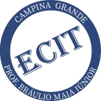
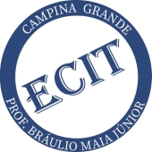
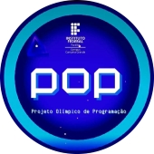
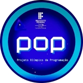

O Projeto Olímpico de Programação é um projeto de extensão organizado pelo Instituto Federal de Educação, Ciência e Tecnologia da Paraíba, Campus Campina Grande (IFPB-CG), com o intuito de preparar alunos para competições de informática, a partir do ensino médio, mais especificamente para a Olimpíada Paraibana de Informática (OPI) e para a Olimpíada Brasileira de Informática (OBI), partindo do pressuposto de que os conteúdos cobrados nessas olimpíadas são de grande relevância na ciência da computação e que o ambiente de competição incentiva os participantes a evoluírem rapidamente.
O projeto possibilita aos alunos o desenvolvimento de habilidades básicas e avançadas de programação.
Esse projeto, nos anos de 2021 e 2022, foi montado em parceira com as Escolas Cidadãs Integral Técnica Professor Bráulio Maia Júnior e Nenzinha Cunha Lima.
 

 
